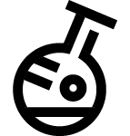
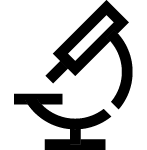
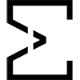
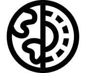
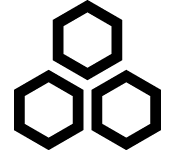
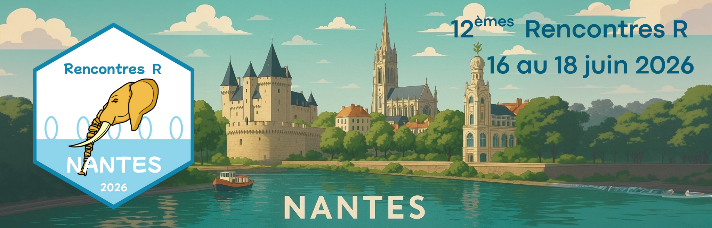
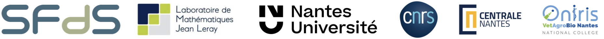

Unités Mixte de Recherche
26

Unités de Recherche
14

Fédérations de Recherche
3

Structure Fédérative de Recherche
1

Unités d'Appui à la Recherche
4


Les Rencontres R, organisées sous l’égide de la Société Française de Statistique1 (SFdS), ont pour objectif de rassembler une communauté essentiellement francophone (non restrictif) d’utilisateurs du langage de programmation R au sens large. Cela englobe les statistiques, l’analyse de données, l’apprentissage machine, l’intelligence artificielle, le traitement des données, les outils pour la communication, etc., dans toutes les disciplines. R (et l’environnement de travail qu’il représente) est l’un des langages informatiques les plus utilisés pour l’analyse de données issues de toutes les disciplines (sciences du vivant, chimie, physique, médecine, pharmacie, informatique, économie, psychologie, ingénierie, sciences actuarielles, commerce, etc.) aussi bien du secteur public que privé. C’est un logiciel libre, multi-plateforme et gratuit. Son code source est ouvert et une large communauté de développeurs contribue à son essor. En janvier 2025, le site principal de distribution de compléments à R2 comptait plus de 22000 packages. La communauté est constituée aussi bien d’académiques et de scientifiques que d’acteurs issus des secteurs publics et privés et des organisations non gouvernementales.
Les Rencontres R ont débuté à Bordeaux en 2012 et ont lieu, sauf exception, tous les ans. Elles se sont déroulées jusqu’ici dans de grandes villes françaises (Bordeaux 2012, Lyon 2013, Montpellier 2014, Grenoble 2015, Toulouse 2016, Anglet 2017, Rennes 2018, Paris 2021, Avignon 2023 et Vannes 2024) et l’an passé en Belgique (Mons 2025). Il s’agit de la plus grande manifestation francophone de ce genre en Europe. À chaque édition, entre 150 et 220 personnes échangent leurs travaux et points de vue. Les débutants sont bienvenus autant que les utilisateurs chevronnés de R. La communauté se caractérise par une grande ouverture. Après un magnifique congrès à Mons en Belgique l’an passé, pays francophone voisin, Nantes Université, et en particulier le laboratoire de Mathématiques Jean Leray, organise l’édition 2026 sur cinq demi-journées du 16 au 18 juin 2026. Une formation au langage Julia sera probablement organisée au même endroit en amont des Rencontres le 15 juin 2026. Un R Dev Day aura également lieu au même endroit le 19 juin 2026 afin d’offrir la possibilité aux participants de prolonger les échanges dans un cadre plus informel et de découvrir d’autres facettes de l’écosystème R comme celle de contribuer au code source de R ou de ses packages. Dans la lignée des éditions précédentes visant à offrir à la communauté des utilisateurs de R un lieu de rencontre et de partage permettant de développer de nouvelles collaborations, l’édition 2026 accueillera des orateurs nationaux et internationaux invités à partager leur expérience et leur expertise aussi bien auprès d’un public novice qu’expert dans des domaines variés dont la santé, l’environnement, l’archeologie, etc.
L’organisation des Rencontres R est guidée par un comité de pilotage (CP). Ce comité a pour rôle de s’assurer que le format de la conférence reste chaque année dans le même esprit que ce qui avait été pensé lors de sa création en 2012. En particulier, le CP veille à ce que les frais d’inscription restent accessibles pour l’ensemble de la communauté, que les personnes impliquées dans l’organisation et le programme soient différentes chaque année en assurant un équilibre académie / industrie & homme / femme, ainsi qu’une diversité des sujets abordés.
Le comité d’organisation (CO) locale prend en charge les différents aspects pratiques du déroulement des Rencontres R, tout en veillant à une continuité dans l’état d’esprit des Rencontres R. Le bon déroulement du colloque se fera aussi grâce au staff du comité de soutien logistique.
Le comité scientifique (CS) définit le programme des présentations orales et des communications au format posters. Il garantit l’équilibre et la qualité des interventions par rapport aux différentes thématiques qui constituent ces Rencontres R. Il choisit les conférenciers invités. Il sélectionne les contributions sous forme de communications et de posters. Il établit la liste des sessions et leur déroulement. Il veille, en particulier, à ce que la communauté soit inclusive et balancée, notamment entre participants débutants et plus expérimentés, mais également, en termes de diversité géographique, de genre, d’expérience et de niveau de carrière. Il est composé de membres d’horizons différents (universités et entreprises différentes).
Nantes Université (anciennement Université de Nantes jusqu’en 2022) a été créée sous sa forme actuelle en 1961, succédant, presque deux siècles plus tard, à l’université ducale de Bretagne fondée en 1460 à Nantes par François II, duc de Bretagne et dissoute en 1793. La Figure 1 illustre l’université ducale.
Depuis 2022, Nantes Université intègre l’École centrale de Nantes, l’ENSA Nantes et l’école des beaux-arts de Nantes et Saint-Nazaire comme établissements-composantes, et associe à sa gouvernance l’IRT Jules Verne, le CHU de Nantes et l’INSERM. La Figure 2 résume l’organisation actuelle de Nantes Université.


Nantes Université est composée de 4 pôles qui regroupent des composantes et des structures de recherche :
Sur ces 4 pôles se répartissent :
26
14
3
Structure Fédérative de Recherche
1
4
Nantes Université est organisée en 12 campus répartis sur 3 villes. Elle accueille 42,500 étudiants, 5,750 personnels dont 3,225 enseignants-chercheurs et chercheurs et 2,525 personnels administratifs et techniques et 1,200 doctorants3. Elle est très engagée dans la formation tout au long de la vie et dans l’internationalisation de ses activités. Elle développe des partenariats avec de nombreuses universités étrangères et accueille chaque année plus de 5,000 étudiants internationaux. Du point de vue de la recherche, Nantes Université est très active dans de nombreux domaines scientifiques. Elle est notamment reconnue pour ses travaux en mathématiques appliquées, en informatique, en physique, en chimie, en sciences du vivant et en sciences humaines et sociales. Elle développe aussi des recherches interdisciplinaires, notamment dans les domaines de la santé, de l’environnement et du numérique. Les étudiants et les chercheurs de Nantes Université bénéficient d’un environnement dynamique et innovant, avec de nombreux laboratoires de recherche, des centres de ressources et des infrastructures de pointe. Les étudiants ont un large choix de formations, allant du niveau licence au doctorat, dans des domaines variés tels que les sciences, les technologies, les sciences humaines et sociales, le droit, l’économie et la gestion4. A titre d’exemple, les étudiants peuvent choisir parmi une centaine de masters possibles.
Les Rencontres R 2026 auront lieu à Nantes, une ville dynamique et culturelle, connue pour son patrimoine historique, ses espaces verts et sa qualité de vie. La ville offre un cadre idéal pour les étudiants et les chercheurs, avec de nombreuses activités culturelles, sportives et sociales. L’université est répartie sur plusieurs campus dans la ville, chacun ayant ses propres caractéristiques et spécialités. Le congrès se tiendra à la faculté des Sciences et Techniques sur le campus de la Lombarderie, situé au nord du centre-ville de Nantes, à environ 25 minutes en tramway de la gare SNCF et seulement 15 minutes du centre-ville. L’amphithéâtre Blaise Pascal et l’amphithéâtre Pasteur accueilleront les participants durant la totalité du congrès. Figure 3 présente quelques clichés des locaux qui accueilleront l’ensemble des participants. D’autres amphithéâtres munis de prises seront utilisées pour les tutoriels et les rares sessions parallèles s’il y en a. Le restaurant universitaire se trouve à proximité immédiate des amphithéâtres. Le campus est facilement accessible en transports en commun, avec plusieurs lignes de tramway et de bus desservant la zone. L’accès en voiture est facilité par la disponibilité d’un vaste parking à proximité.


L’édition 2026 reste fidèle au format adopté par les Rencontres R jusqu’ici. Il s’agira d’une manifestation qui se déroule sur cinq demi-journées et constituée de :
Les conférenciers et conférencières invités seront choisis par le comité scientifique en veillant à une diversité géographique, de genre, d’expérience et de niveau de carrière et inclueront des intervenants et intervenantes internationales. Le programme détaillé suivant ces lignes principales sera établi par le Comité Scientifique à partir de septembre 2025. Nous ne manquerons pas de vous fournir une version mise à jour de ce document lorsque le programme scientifique sera définitivement établi.
L’édition 2026 reste fidèle au format adopté par les Rencontres R jusqu’ici : une manifestation qui se déroule sur cinq demi-journées et constituée de :
Le programme insistera sur le développement logiciel dans différentes orientations, sur l’enseignement et l’apprentissage de R, sur son utilisation en écologie, en sciences humaines, en médecine et dans d’autres disciplines. Aussi, cinq thématiques générales sont mises en évidence lors de cette édition :
En outre, les contributions sont les bienvenues dans les champs suivants :
Les contributeurs issus de tous pays sont encouragés à participer. Le français sera la langue principale, mais l’anglais est également accepté.
Les tutoriels porteront sur les thèmes suivants :
Les conférences plénières programmées sont les suivantes :
Plus d’informations sur les Rencontres R 2026 seront accessibles sur le site web https://rr2026.sciencesconf.org/. Vous pouvez aussi consulter les sites des événements antérieurs : https://rr2025.sciencesconf.org, https://rr2024.sciencesconf.org et https://rr2023.sciencesconf.org.
Toutes les manifestations scientifiques internationales, parce qu’elles déplacent vers un même lieu un grand nombre de personnes, ont une empreinte écologique non négligeable. Il est dans la tradition des Rencontres R de minimiser cette empreinte au maximum. Le comité d’organisation s’engage ainsi à inciter à utiliser les moyens de transports les moins polluants, en particulier au niveau du budget carbone (train privilégié). Notre campus « vert » avec de larges espaces dédiés à la biodiversité a une politique de développement durable et de recyclage des déchets. Aucun goodies non écorecyclable ne sera distribué. Nous privilégions également une approche écoresponsable concernant la restauration proposée aux participants (repas du midi, pauses café et repas de gala).
L’ensemble des comités (pilotage, organisation et scientifique) a été composé en veillant à respecter une parité homme/femme (50% de femmes pour le CP, 50% pour le CO et 37.5% pour le CS). Nous nous engageons à poursuivre cette démarche dans le choix des conférenciers et conférencières invités et des présentateurs et présentatrices des communications orales.
Les Rencontres R sont en partie financées par les inscriptions des participants. Cependant, les droits d’inscription sont volontairement maintenus très bas afin de permettre à un maximum de personnes d’y participer. Les compléments issus de partenaires des secteurs publics et privés sont indispensables à la bonne réalisation de cette manifestation.
La Société Française de Statistique étant reconnue d’utilité publique, le sponsoring peut donner lieu à une déduction fiscale en France selon les articles 200 et 238 bis du Code Général des Impôts. Le montant minimum demandé est de 500 euros, avec une inscription gratuite à tout l’événement offerte par tranche de 1.000 euros. Selon le montant, vous pouvez obtenir une mention de votre entreprise sur les supports de la conférence (site internet, programme, affichage, réseaux sociaux, stand).
Les différentes formules que nous pouvons vous proposer sont divisées en trois paliers résumés en Table 1 :
| Formule & Tarif | Description |
|---|---|
| Bronze : 500-999 euros | Logo + url sur la page web, Logo et nom sur le programme |
| Argent : 1,000-1,999 euros | Bronze + 1 invitation + diffusion LinkedIn |
| Or : plus de 2,000 euros | Argent + slide avec logo pendant le colloque / durant les pauses + 1 invitation |
Quel que soit le montant, un stand sera mis à disposition sur demande. Pour toute demande ou renseignement sur les possibilités de subvention, de stand, ou autres actions possibles, n’hésitez pas à contacter le comité d’organisation à l’adresse suivante : mailto:rr2026@sciencesconf.org (voir aussi la section « Coordonnées de contact » au début de ce document).